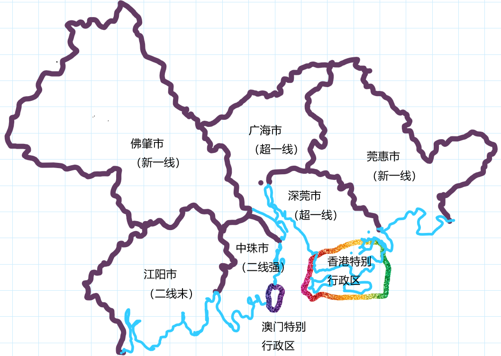
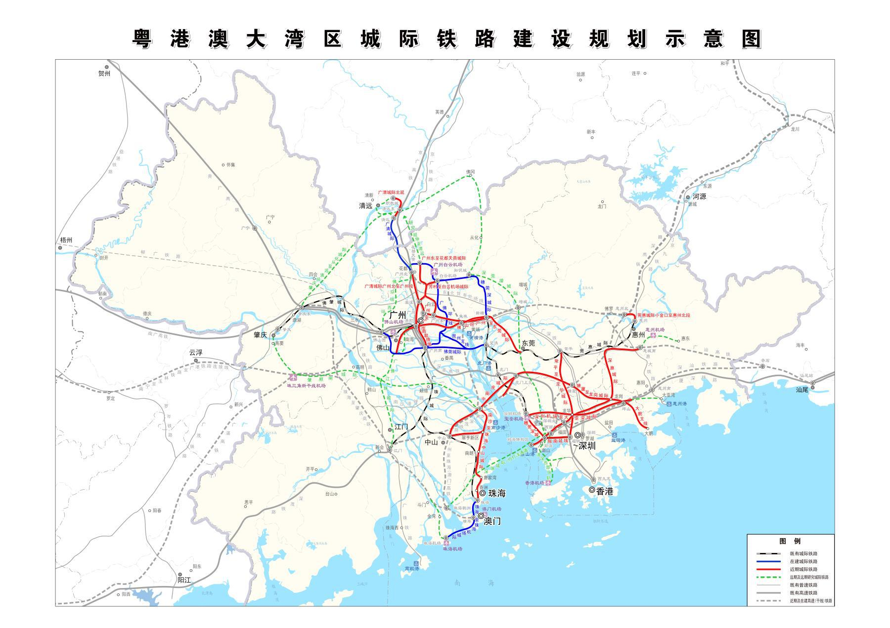

2035年的约定：《学科之爱》
这是YDJSIR的夙愿。
这也是YDJSIR选择计算机相关专业的重要原因。
引擎、云服务、示范作品，有机一体化建设，协同发展。

UPAE引擎与对应的UAC云平台及相关技术

YDJSIR深知YDJSIR离拥有这样完整的技术栈还有很长很长的路要走。况且，YDJSIR深知现在离2035年还很远，那个时候所主流的技术栈是我们现在难以预测的，因而YDJSIR在此处只能给出大概的方向，而不是具体的实现方案。
但毫无疑问地，YDJSIR不想要简单的纸片人。但是为了保证风格，YDJSIR将在大部分场景使用Live2D，少部分采用加了新海诚滤镜的脱敏照片或3D建模，在少部分非关键场合或者决定性瞬间采用纯2D。与此同时，YDJSIR深知传统Gal下面的哪个文本框有多讨厌，YDJSIR的作品将采取类似影视剧字幕的方式，字幕的颜色字体大小等也将可以调节。在这方面，YDJSIR目前的参考对象是《初恋日记》。
有一说一，YDJSIR当年在纪中听某王姓大佬痛批高恋使用的NVL时是多么懵逼但还是决定跟着一起批判NVL并决定另起炉灶……
他当时也用UE4做了个AVG引擎，不过好像最近没更新了。他在GitHub上留下的公开足迹似乎并不多。
有兴趣可以了解下这个项目：https://github.com/Billy-Hostage/UAVG
这里还有一个Demo项目：https://github.com/Billy-Hostage/UAVG_Example
至于该引擎与云的密切结合，是YDJSIR对在体验各大主流国产Gal时对内容分发以及多平台适应上的种种问题的回答。就目前来看，最好的解决跨平台相关问题的方式，就是HTML5！除了Cocos等传统上就可以导出HTML5项目的传统引擎还是RenPy这样支持HTML5项目导出的专用AVG游戏引擎，也有不少国产引擎在进行着相关的尝试。比如说，NVLCloud。（没错，就是上面提到的那个高恋采用的NVL的HTML5版本）不过好像只是放了Demo出来……资料不大详细。当然，YDJSIR既然要自立门户，那么肯定要取众人的长处，再揉入YDJSIR自己的理解。
学科之爱-反映学科追梦历程的青春校园AVG
本作品最早将于2035年发布，各项设定将基于2034年，此后在现实中升学政策基本不变的情况下只做内容增补与漏洞修复

这不仅将是对YDJSIR的引擎技术的考验，更是YDJSIR的一个理想。
在这里，YDJSIR将构建起YDJSIR心中理想中的高中生活，在升学的压力下，为了自己所喜爱的学科努力奋斗钻研的故事。受限于YDJSIR自身的知识面广度与深度，YDJSIR想必将从信息学（竞赛）/软件工程（普通高考）入手，而后再逐步拓展到其他学科。YDJSIR希望建立一套在中国可行的，中国高中生可以逐步建立起来的一套知识系统与学习路径，并将它以AVG的形式封装起来，展示给世人。
YDJSIR深知，为了自己喜爱的学科而奋斗，并不仅仅是个人选择的问题，同时也是与家庭、学校与社会之间的重重博弈。在这里，游戏中的所有升学政策将严格按照现实中广东省以及各个高校在这方面的政策规定进行设定，尽量模拟出真实的升学路径与学习路线，让玩家能真正地体验到竞赛生/持有特定梦想的高中生在课余时间自主探索自己热爱的学科的成长历程。为了避嫌，YDJSIR会尽量避开所有的政治符号。诚然，YDJSIR知道在非竞赛生纯粹为了自己的理想而参加竞赛/自主探索方面的努力也许会被批判是不现实且幼稚的，且学习路线本来就可能是多样的，不管是行内的人还是行外的人都可能对其进行批判。YDJSIR将会认真吸收其中有益的意见，若不便于改动AVG本体的，则可以作为注释或备注予以注明。YDJSIR同样希望相关行业的专业人士帮助完善YDJSIR的作品。
作品三大内容核心
| 学科建构展示 | 粤港澳大湾区全系建构 | 强校氛围展示 |
|---|---|---|
| 知识树机制 高考/学考模拟 |
全面反映粤港澳大湾区不同地区的发展程度（有艺术加工） | 展示部分特定强校校园氛围 |
与此同时，YDJSIR也将引入系列YDJSIR自认为较有特色的理念。
作品特色理念
1. 所有非必须剧情均可以跳过（不是简单的略去CG，而是直接不发生）
YDJSIR希望因剧情强制发生的事件尽可能地少。然而，YDJSIR尊重那些希望减少非必需操作的人。具体途径包括默认设置（比如说设置为全部努力学习时，上所有课的默认态度将均会被设置为努力）以及切换模式等。就连做题部分，也可以默认用系统根据当前玩家的能力值按概率跳过（事实上，YDJSIR将有这样的设定：如果玩家控制角色在剧情中表现的能力连这个题目都看不懂的话，那么控制权将无法转交给玩家让玩家做题）
事实上，就连内心独白也可以不发生。然而，这样做成功的概率将与角色当前的
毅力值大小有关。
2. 被保证的选择权
即使某选项对应结果因为没有达成其他前置条件而出现，你依然可以点击这个选项，虽然什么都不会发生。然而，该选项本体一定是可见的。
3. 随时可以调出的来源引用标记与参考资料
为了能让玩家更好地了解事件的背景/原型并严格遵守引用的相关规定，所有的外部资料引用以及背景说明都可以在游戏界面中调出（如果有的话）。YDJSIR在引用著名参考书/出版社时，若采用全称，则必然进行部分避讳，以与现实中相区分。
4. 对粤语的特殊支持
尽可能多地引入粤语场景（比如说与父母的对话必然用粤语进行），凡是粤语内容均必然有对应的国语字幕与粤语（含拼音）字幕。在游戏中的特定场景，玩家可以选择说粤语/不说粤语，进而触发不同的事件。
5. 尽可能真实的学科模拟
计算机相关的题目以及对应判卷系统（如OJ）可以直接集成到游戏本体中。电子/物理的可以用模拟器进行。化学/生物的由于仿真成本过高，难以进行，只能以客观题的形式呈现。游戏内支持Markdown笔记以及Latex输入公式（判卷系统识别Latex）。若有可能，还可引入手写笔输入/OCR模式（反正也是调库）
作品特色背景
毫无疑问，YDJSIR将以YDJSIR所真实生活过的高中作为背景。事实上，中山纪念中学（以下简称纪中）的实力完全够支撑起这部作品的设定。当然，为了降低难度，作品中的那所学校的实力实际上还会更强，大致达到广东省第五名的水平。为了防止与现实中具体的实体相对应，作品中出现的所有具体人名、地名与组织名均会避讳。况且，YDJSIR所有的人设必然是经过艺术加工与抽象的，绝不针对特定的人或团体。而且，纪中的校园足以让大多数人怀疑其真实性：真的有高中能有这么好的条件？事实上是的。作品中也会刻意地引入定向越野项目以帮助玩家更好地探索这个校园（熟悉各类剧情的套路）。纪中广阔的校园与茂密的植被也为各类仅有特定角色出现的场合提供了极好的条件。可以这么说，YDJSIR将虚拟一个除了校园环境与文化背景基本相似而具体人物性格与设定与现实基本不同的校园环境。
与此同时，大湾区的风景也将纳入其中。为了提高模糊性，作品中的设定中大湾区是“6+2”，如下图所示。每个城市的发展程度设定将比现实中略为拔高一些。与此同时，对于具体地名指示也将模糊化与抽象化处理。与此同时，作品涉及的学校也绝不止主角们生活的学校这一所。在这些不同的湾区城市，还有其他的强校与主角所在的学校相互竞争。这些学校也将会有各自的原型与特色（远期计划）。

与此同时，大湾区内的城市交通建设成就也会成为游戏的一个亮点。城际间轨道交通发展状况基本按照2020年的最新批示设定（如下图所示）

与此同时，作品对应学校所在城市——中珠市的地铁也将全线贯通（根据网友的构想），校门口将有中珠轨道交通二号线通过。
之所以要构建这么宏大的世界观，是为了给后期补充与粤文化相关的内容打下基础。作品中将充分重视当下广东外来人口繁多的现状，区分出广府文化片区的角色与非广府文化片区的角色，纯广府文化片区的角色将联动参与当地的民俗特色活动（如叹早茶等）。
本作品拒绝一切形式的地域歧视！本作品中只有对南粤的赞美而绝无对其他地区的中伤！